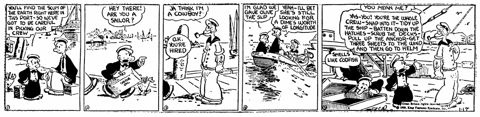
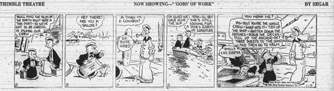
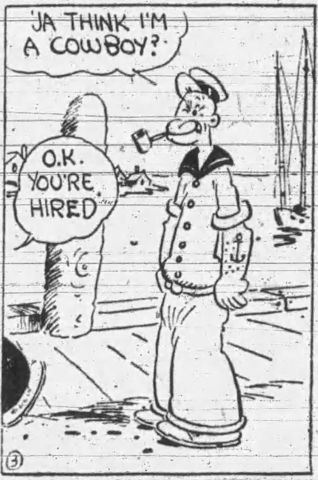
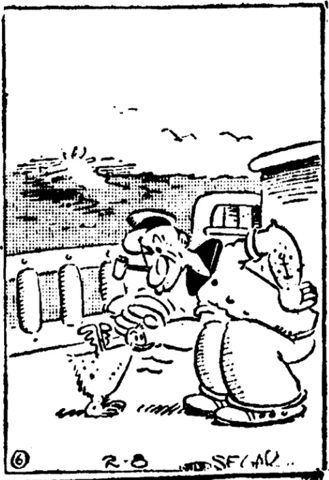
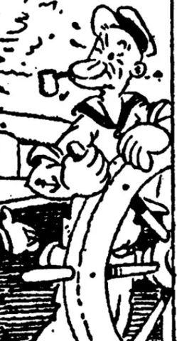
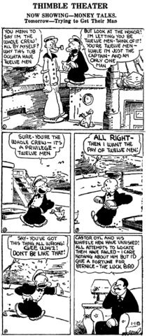
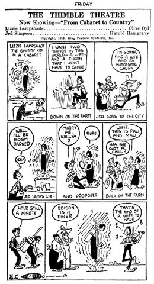
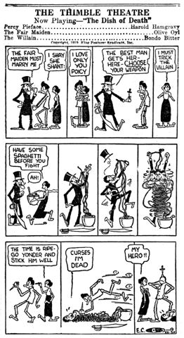

First Popeye Strip, East Liverpool Review, 1929-01-17, p12.jpg
License: Public domain（公版 ✔）
Artist: E. C. Segar (1894–1938)







1929 年 1 月 17 日，Popeye 喺《Thimble Theatre》報紙連載漫畫首次登場，最初係配角，後來因太受歡迎成為主角。角色原型係現實水手 Frank「Rocky」Fiegel。本資料只針對 1929 年原始黑白報章連環畫版，唔係 1933 年之後嘅彩色動畫版。
黑白報章連環畫，一眼永遠閉住（「Popeye」之名由此斜眼嚟）、下巴前凸、爆筋前臂、超大赤腳大腳掌。1929 初登場著白制服、幾集後換黑色水手服。常叼玉米芯煙斗。Segar 鬆散粗筆線條、泛黃舊報紙質感。
Prompt 示例：
Ink-on-paper 1920s newspaper comic strip, black and white, loose scratchy Segar style. A short muscular one-eyed sailor squinting hard, huge knobby forearms like balloons, oversized bare flat feet, black short-sleeved sailor shirt with flared collar, corncob pipe clenched between teeth, puffs of smoke shaped as doodles, minimal background, hand-lettered speech balloon, halftone newsprint texture, aged cream paper.
「Ya think I'm a cowboy?」——1929/1/17 歷史性第一句台詞，不屑帶刺
「Well, blow me down!」——最早期口頭禪，表達驚嘆
「I yam what I yam, and that's all what I yam.」——自我認同宣言
「I can't stands no more.」——忍無可忍嘅爆發
「That's dangerisk business, sonny.」——malapropism 例子
「I ain't a-scared o' no man, nor no beast, nor no ghost what walks the sea at night.」——夜間豪語
「Keep me outta trouble, Olive, or I'll clobber somebody.」——痞子式警告
{kind=link}
{kind=link}